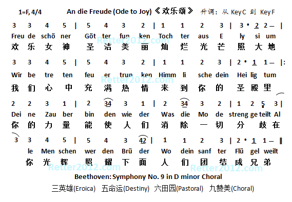

返回主页
贝多芬《欢乐颂》(An die Freude)

升调降调原理（四线谱）
乐谱基本常识
全音和半音（第几品格）
Ukulele各部分名称（2）
Ukulele新手指南
Edelweiss《雪绒花》
天空之城（和弦讲解）
Michael Jackson
We Are The World
"We Are the World" is a song and charity single originally recorded by the supergroup USA for Africa in 1985. It was written by Michael Jackson and Lionel Richie, and produced by Quincy Jones and Michael Omartian for the album We Are the World. With sales in excess of 20 million copies, it is one of the fewer than 30 all-time singles to have sold at least 10 million copies worldwide.
There comes a time when we hear a certain call
When the world must come together as one
There are people dying
And its time to lend a hand to life
The greatest gift of all
We can't go on pretending day by day
That someone, somewhere will soon make a change
We are all a part of God's great big family
And the truth, you know,
Love is all we need
[Chorus]
We are the world, we are the children
We are the ones who make a brighter day
So lets start giving
There's a choice we're making
We're saving our own lives
Its true we'll make a better day
Just you and me
Send them your heart so they'll know that someone cares
And their lives will be stronger and free
As God has shown us by turning stones to bread
So we all must lend a helping hand
[Chorus]
When you're down and out, there seems no hope at all
But if you just believe there's no way we can fall
Let us realize that a change can only come
When we stand together as one
version:1.0; jobnet@188.com © retter2012.com